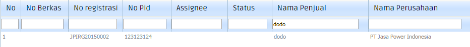
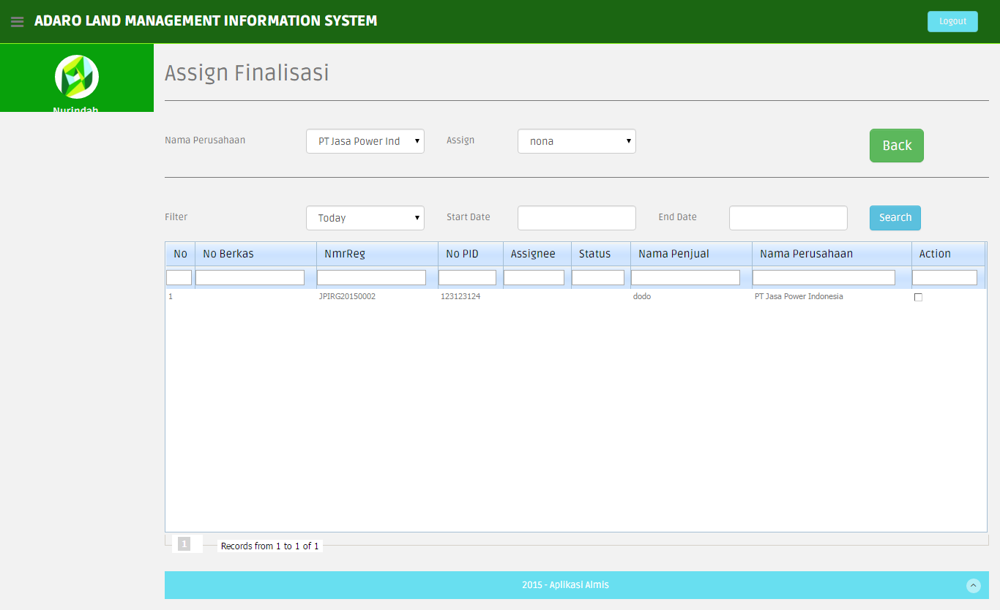
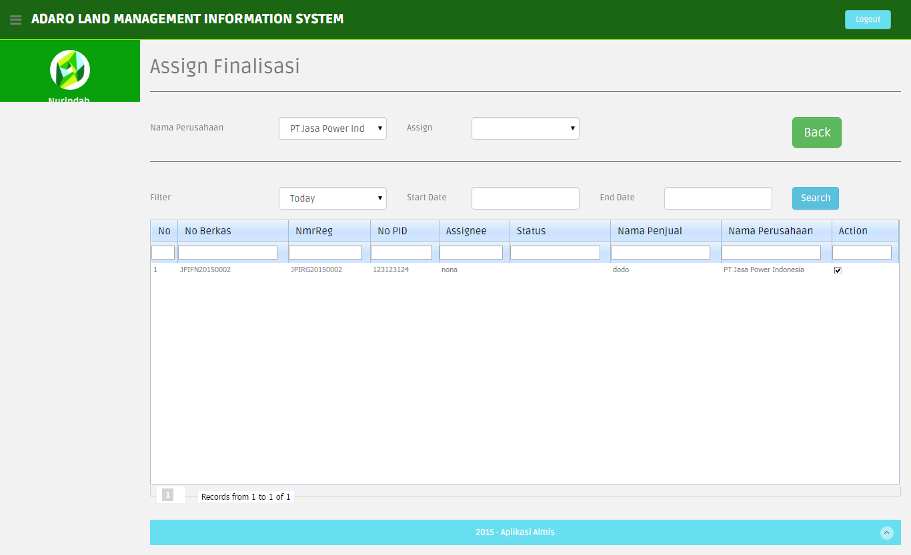
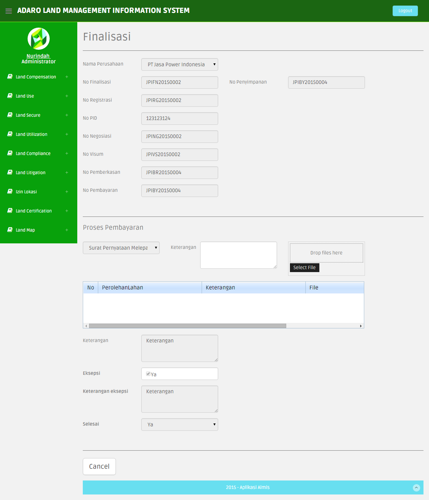
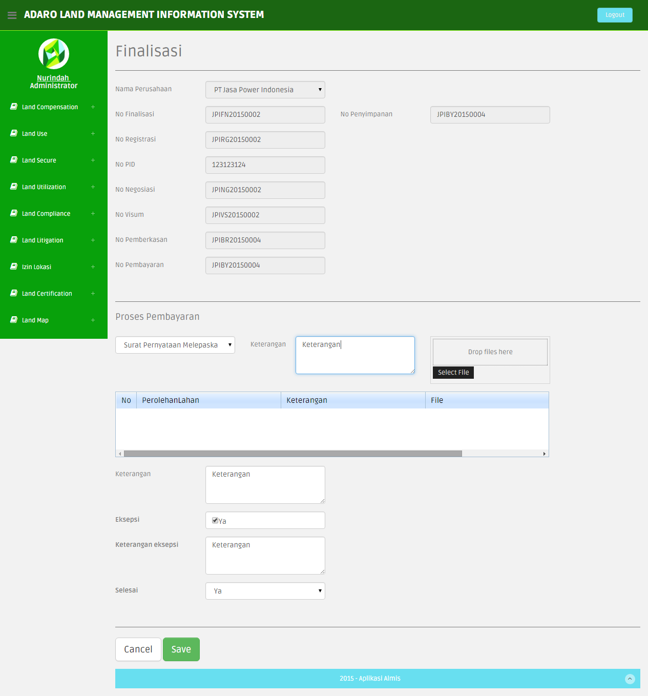

3.1.7. Finalisasi
Untuk menuju ke halaman Finalisasi, tahapan yang dilakukan adalah sebagai berikut:
- Klik menu Land Compensation > Finalisasi
- Akan tampil halaman Finalisasi seperti gambar berikut

1. User melakukan pencarian data List Finalisasi berdasarkan pada list drop down nama perusahaan.
- Pilih salah satu dari list dropdown nama perusahaan.
- maka akan ditampilkan list Finalisasi perusahaan yang dipilih
2. User melakukan pencarian data List Finalisasi berdasarkan periode pada list drop down.
- Pilih salah satu dari list dropdown periode.
- maka akan ditampilkan list Finalisasi berdasarkan periode yang dipilih
3. User melakukan pencarian data List Finalisasi berdasarkan Date Awal dan Date Akhir, dengan mengisi kedua kolom kemudian menekan button Search.
Jika salah satu kolom date tidak diisi maka akan muncul warning. dan data tidak akan ditampilkan.
4. Untuk melakukan pencarian / filter berdasarkan isi kolom yang dipilih,dengan cara ketik seperti yang di tunjukan gambar di bawah ini:

5. Button Assign untuk menambah data baru di tabel Finalisasi
- Klik button Assign, maka akan ditampilkan halaman untuk melakukan Assign Finalisasi

- Pilih nama perusahaan untuk menampilkan record berdasarkan nama perusahaan.
- Pilih Filter periode untuk menampilkan record berdasarkan periode, hari ini, Minggu ini, Bulan ini
- Pilih Filter Start Date dan End Date untuk menampilkan record berdasarkan tanggal record dibuat.
- Pilih nama yang ingin diberikan tugas Finalisasi di field Assign. Misalnya dipilih “nona”.
- Klik untuk memberi centang pada field Action, maka field Assign akan terisi dengan nama yang dipilih yaitu “nona”.

- Klik button Back maka user akan kembali ke halaman Finalisasi
- Setelah itu di halaman Finalisasi, record yang telah diberikan Assign pada field Action akan terdapat link view, edit, delete.
berfungsi untuk :
view: melihat detail informasi data dari record yang dipilih
- Klik link view, akan ditampilkan halaman view Approval Finalisasi

edit: mengubah detail informasi data dari record yang dipilih
- Klik link edit, akan ditampilkan halaman edit Approval Finalisasi

- Untuk melampirkan file berekstensi .jpg klik button Select File, akan tampil folder;
- Pilih file yang ingin diupload
- Klik Open
- Klik button Upload, maka akan tampil presentase file yang diupload, seperti gambar berikut.
- Isilah semua data dikolom yang disediakan.
- Pilih Status Finalisasi menjadi Lanjut untuk masuk ke proses transaksi selanjutnya.
- Klik button Save untuk menyimpan perubahan.
- Klik button Cancel bila tidak ingin menyimpan perubahan.
delete: menghapus data record yang dipilih
- Klik link delete, maka akan tampil halaman deleteFinalisasi
- Klik button Delete untuk manghapus data, atau
- Klik button Cancel jika tidak ingin menghapus data.
- Setelah user menekan button Delete maka akan muncul pemberitahuan seperti gambar di bawah ini :
- Apabila data berhasil di delete maka akan mucul pemberitahuan seperti gambar di bawah ini :
6. Records From.. to.. of.. : menunjukkan jumlah record .